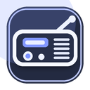

Cover Music Player
Radio-Symbol anheften
Chrome zeigt neue Erweiterungen meistens zuerst im Puzzle-Menü. Hefte das kleine Radio-Symbol an, damit es dauerhaft neben deinen anderen Extensions erscheint.
-
1
Oben rechts auf das Puzzle-Symbol klicken
Das Symbol sieht aus wie ein kleines Puzzleteil neben der Adressleiste.
-
2
„Cover Music Player“ suchen
In der Liste der Erweiterungen sollte das kleine Radio-Icon angezeigt werden.
-
3
Auf die Stecknadel klicken
Danach steht das Radio-Symbol direkt neben deinen anderen Extensions.